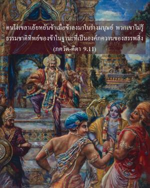
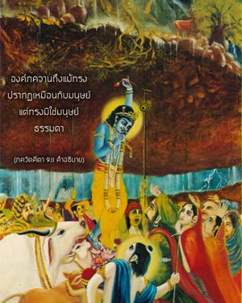
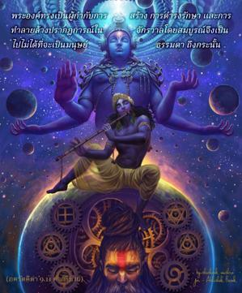
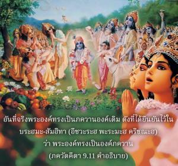
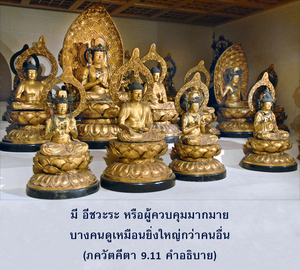
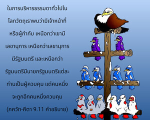

คนโง่เขลาเย้ยหยันข้าเมื่อข้าลงมาในร่างมนุษย์ พวกเขาไม่รู้ธรรมชาติทิพย์ของข้าในฐานะที่เป็นองค์ภควานฺของสรรพสิ่งทั้งหลาย






จากคำอธิบายของโศลกก่อนๆในบทนี้เป็นที่กระจ่างว่าองค์ภควานฺนั้นถึงแม้ว่าจะทรงปรากฏเหมือนกับมนุษย์แต่ทรงมิใช่มนุษย์ธรรมดา พระองค์ทรงเป็นผู้กำกับการสร้าง การดำรงรักษา และการทำลายล้าง ปรากฏการณ์ในจักรวาลโดยสมบูรณ์จึงเป็นไปไม่ได้ที่จะเป็นมนุษย์ธรรมดา ถึงกระนั้นก็ยังมีคนโง่เขลาหลายคนที่พิจารณาว่าองค์กฺฤษฺณทรงเป็นเพียงมนุษย์ผู้มีอำนาจคนหนึ่งเท่านั้น ไม่มีอะไรมากไปกว่านี้อันที่จริงพระองค์ทรงเป็น ภควานฺ องค์เดิม ดังที่ได้ยืนยันไว้ใน พฺรหฺม-สํหิตา (อีศฺวรห์ ปรมห์ กฺฤษฺณห์) ว่าพระองค์ทรงเป็นองค์ภควานฺ
มี อีศฺวร หรือผู้ควบคุมมากมายบางคนดูเหมือนยิ่งใหญ่กว่าคนอื่น ในการบริหารธรรมดาทั่วไปในโลกวัตถุเราพบว่ามีเจ้าหน้าที่หรือผู้กำกับ เหนือกว่าเขามีเลขานุการ เหนือกว่าเลขานุการมีรัฐมนตรี และเหนือกว่ารัฐมนตรีมีนายกรัฐมนตรีแต่ละท่านเป็นผู้ควบคุม แต่คนหนึ่งจะถูกอีกคนหนึ่งควบคุม ใน พฺรหฺม-สํหิตา กล่าวว่าองค์กฺฤษฺณทรงเป็นผู้ควบคุมสูงสุด มีผู้ควบคุมมากมายทั้งในโลกวัตถุและโลกทิพย์โดยไม่ต้องสงสัยแต่องค์กฺฤษฺณทรงเป็นผู้ควบคุมสูงสุด (อีศฺวรห์ ปรมห์ กฺฤษฺณห์) และพระวรกายของพระองค์ทรงเป็น สจฺ-จิทฺ-อานนฺท ไม่ใช่วัตถุ
ร่างวัตถุไม่สามารถแสดงกิจกรรมอันน่าอัศจรรย์ดังที่ได้อธิบายไว้ในโศลกก่อนหน้านี้ พระวรกายของพระองค์ทรงเป็นอมตะ มีความสุขเกษมสำราญ และเปี่ยมไปด้วยความรู้ ถึงแม้ทรงไม่ใช่มนุษย์ธรรมดาคนโง่เขลายังเยาะเย้ยพระองค์และพิจารณาว่าพระองค์ทรงเป็นมนุษย์ พระวรกายของพระองค์ได้ถูกเรียก ณ ที่นี้ว่า มานุษีมฺ เพราะทรงแสดงเหมือนกับมนุษย์ เป็นเพื่อนของ อรฺชุน เป็นนักการเมืองที่เกี่ยวข้องในสมรภูมิ กุรุกฺเษตฺร พระองค์ทรงกระทำตัวเหมือนกับมนุษย์สามัญธรรมดาในหลายๆด้าน แต่อันที่จริงพระวรกายของพระองค์ทรงเป็น สตฺ จิตฺ อานนฺท วิคฺรห สุขเกษมสำราญ เป็นอมตะ และมีความรู้ที่สมบูรณ์ เช่นนี้ได้ยืนยันไว้ในภาษาพระเวทเช่นกันว่า สจฺ-จิทฺ-อานนฺท-รูปาย กฺฤษฺณาย “ข้าขอถวายความเคารพอย่างสูงแด่บุคลิกภาพสูงสุดแห่งพระเจ้าองค์กฺฤษฺณผู้ทรงมีรูปลักษณ์ที่สุขเกษมสำราญนิรันดรแห่งความรู้” ( โคปาล-ตาปนี อุปนิษทฺ 1.1) มีคำพรรณนาอื่นๆในภาษาพระเวทอีกว่า ตมฺ เอกํ โควินฺทมฺ “พระองค์ทรงเป็น โควินฺท ผู้ให้ความสุขแก่ประสาทสัมผัสและฝูงวัว” สจฺ-จิทฺ-อานนฺท-วิคฺรหมฺ “และรูปลักษณ์ของพระองค์ทรงเป็นทิพย์เปี่ยมไปด้วยความรู้ ความสุขเกษมสำราญ และเป็นนิรันดร” ( โคปาล-ตาปนี อุปนิษทฺ 1.35)
ถึงแม้ว่าคุณสมบัติทิพย์ต่างๆแห่งพระวรกายขององค์กฺฤษฺณทรงเปี่ยมไปด้วยความสุขเกษมสำราญ และความรู้ก็ยังมีผู้ที่สมมติว่าเป็นนักวิชาการและนักวิจารณ์ ภควัท-คีตา มากมายที่เย้ยหยันว่าองค์กฺฤษฺณทรงเป็นมนุษย์ปุถุชนธรรมดา นักวิชาการอาจเกิดมาเป็นมนุษย์พิเศษเนื่องมาจากกรรมดีของตนในอดีต แต่แนวคิดเกี่ยวกับศฺรี กฺฤษฺณเช่นนี้อันเนื่องมาจากด้อยความรู้จึงถูกเรียกว่า มูฒ เพราะคนโง่เขลาเท่านั้นที่พิจารณาว่าองค์กฺฤษฺณทรงเป็นมนุษย์ปุถุชนธรรมดา คนโง่เขลาพิจารณาว่าองค์กฺฤษฺณเป็นคนธรรมดาเพราะไม่รู้กิจกรรมส่วนพระองค์และพลังงานอันหลากหลายของพระองค์ พวกเขาไม่รู้ว่าพระวรกายขององค์กฺฤษฺณทรงเป็นเครื่องหมายแห่งความรู้และความสุขเกษมสำราญอย่างสมบูรณ์ พระองค์ทรงเป็นเจ้าของทุกสิ่งทุกอย่างที่มีอยู่และพระองค์ทรงสามารถให้อิสรภาพแด่ทุกคน เนื่องจากไม่รู้ว่าองค์กฺฤษฺณทรงมีคุณสมบัติทิพย์มากมายพวกนี้จึงเย้ยหยันพระองค์
พวกเขาไม่รู้ว่าการปรากฏขององค์ภควานฺในโลกวัตถุนี้เป็นปรากฏการณ์ของพลังงานเบื้องสูงของพระองค์ พระองค์ทรงเป็นเจ้าแห่งพลังงานวัตถุ ดังที่ได้อธิบายไว้แล้วหลายแห่ง ( มม มายา ทุรตฺยยา ) ทรงอ้างว่าพลังงานวัตถุแม้มีพลังอำนาจมากก็อยู่ภายใต้การควบคุมของพระองค์ ผู้ใดที่ศิโรราบต่อองค์ภควานฺจะสามารถหลุดออกไปจากการควบคุมของพลังงานวัตถุนี้ได้ ถ้าหากดวงวิญญาณที่ศิโรราบต่อองค์กฺฤษฺณจะสามารถหลุดออกไปจากอิทธิพลของธรรมชาติวัตถุ แล้วองค์ภควานฺผู้ทรงเป็นผู้กำกับการสร้างการดำรงรักษาและการทำลายล้างธรรมชาติจักรวาลทั้งหมดจะมีร่างกายวัตถุเหมือนพวกเราได้อย่างไร ฉะนั้นแนวความคิดเกี่ยวกับองค์กฺฤษฺณเช่นนี้เป็นความคิดที่โง่เขลาเบาปัญญาที่สุด อย่างไรก็ดีคนโง่ๆพวกนี้ไม่สามารถสำเหนียกรู้ได้ว่าองค์ภควานฺ กฺฤษฺณผู้ทรงปรากฏเหมือนมนุษย์ธรรมดาจะสามารถเป็นผู้ควบคุมละอองอณูทั้งหมดและปรากฏการณ์อันยิ่งใหญ่แห่งรูปลักษณ์จักรวาลได้อย่างไร ความยิ่งใหญ่ที่สุดและเล็กที่สุดอยู่เหนือแนวความคิดของพวกเขา ดังนั้นจึงไม่สามารถจินตนาการว่ารูปลักษณ์ของมนุษย์เช่นนี้สามารถควบคุมสิ่งที่ไม่มีที่สิ้นสุดและสิ่งที่เล็กที่สุดในขณะเดียวกันได้อย่างไร อันที่จริงถึงแม้ทรงควบคุมสิ่งที่ไม่มีที่สิ้นสุดและสิ่งที่เล็กสุดพระองค์ก็ทรงอยู่ห่างจากปรากฏการณ์เหล่านี้ทั้งหมด ได้กล่าวไว้อย่างชัดเจนเกี่ยวกับ โยคมฺ ไอศฺวรมฺ ซึ่งเป็นพลังงานทิพย์ที่ไม่สามารถมองเห็นได้ของพระองค์ว่าทรงสามารถควบคุมสิ่งที่ไม่จำกัด และสิ่งที่เล็กที่สุดพร้อมๆกันและทรงสามารถอยู่ห่างจากสิ่งเหล่านี้ ถึงแม้ว่าคนโง่เขลาไม่สามารถจินตนาการว่าองค์กฺฤษฺณผู้ทรงปรากฏเหมือนมนุษย์ธรรมดาสามารถควบคุมสิ่งที่ไม่มีขอบเขตจำกัดและสิ่งที่เล็กที่สุด สาวกผู้บริสุทธิ์ยอมรับเช่นนี้เพราะทราบดีว่าองค์กฺฤษฺณ คือองค์ภควานฺ ฉะนั้นสาวกจะศิโรราบต่อพระองค์โดยดุษฎีและปฏิบัติในกฺฤษฺณจิตสำนึกด้วยการอุทิศตนเสียสละรับใช้
มีข้อขัดแย้งระหว่างพวกไม่เชื่อในรูปลักษณ์และพวกที่เชื่อในรูปลักษณ์เกี่ยวกับการปรากฏขององค์ภควานฺในรูปร่างมนุษย์ แต่หากเรารับคำปรึกษากับ ภควัท-คีตา และ ศฺรีมทฺ-ภาควตมฺ คัมภีร์ที่เชื่อถือได้เพื่อให้เข้าใจศาสตร์แห่งองค์กฺฤษฺณเราก็จะสามารถเข้าใจว่าองค์กฺฤษฺณ คือองค์ภควานฺพระองค์ทรงมิใช่มนุษย์ธรรมดาแม้จะทรงปรากฏบนโลกนี้เหมือนมนุษย์ธรรมดาก็ตาม ใน ศฺรีมทฺ-ภาควตมฺ ภาคหนึ่งบทที่หนึ่งเมื่อเหล่านักปราชญ์ที่นำโดย เศานก ถามเกี่ยวกับกิจกรรมต่างๆขององค์กฺฤษฺณโดยกล่าวว่า
กฺฤตวานฺ กิล กรฺมาณิ
สห ราเมณ เกศวห์
อติ-มรฺตฺยานิ ภควานฺ
คูฒห์ กปฏ-มาณุษห์
“องค์ภควานฺ ศฺรี กฺฤษฺณพร้อมทั้ง พลราม ทรงเล่นกันเหมือนมนุษย์ ในบทบาทนี้พระองค์ทรงแสดงกิจกรรมเหนือมนุษย์มากมาย” ( ศฺรีมทฺ-ภาควตมฺ 1.1.20) การปรากฏขององค์ภควานฺในฐานะที่เป็นมนุษย์ทำให้คนโง่เขลาสับสน ไม่มีมนุษย์ผู้ใดสามารถกระทำสิ่งอันน่าอัศจรรย์ที่องค์กฺฤษฺณทรงแสดงขณะที่ปรากฏอยู่บนโลกนี้ เมื่อองค์กฺฤษฺณทรงปรากฏต่อหน้าพระบิดาและพระมารดา วสุเทว และ เทวกี พระองค์ทรงปรากฏในรูปสี่กรแต่หลังจากที่พระบิดาและพระมารดาถวายบทมนต์พระองค์ก็ทรงเปลี่ยนร่างมาเป็นเด็กน้อยธรรมดา ดังที่ได้กล่าวไว้ใน ภาควต (10.3.46) พภูว ปฺรากฺฤตห์ ศิศุห์ พระองค์ทรงกลายมาเป็นเหมือนกับเด็กน้อยธรรมดามนุษย์ธรรมดาคนหนึ่ง ตรงนี้ได้แสดงให้เราเห็นอีกครั้งหนึ่งว่าการปรากฏขององค์ภควานฺในรูปลักษณ์มนุษย์ธรรมดาเป็นลักษณะหนึ่งแห่งร่างทิพย์ของพระองค์ ในบทที่สิบเอ็ดของ ภควัท-คีตา ก็เช่นกันได้กล่าวไว้ว่า อรฺชุน ทรงภาวนาเพื่อให้เห็นรูปลักษณ์สี่กรขององค์กฺฤษฺณ ( เตไนว รูเปณ จตุรฺ-ภุเชน ) หลังจากที่ได้รับคำขอร้องจาก อรฺชุน องค์กฺฤษฺณทรงเปิดเผยรูปลักษณ์นี้และแล้วทรงกลับคืนมาสู่ร่างเดิมของพระองค์ที่คล้ายมนุษย์ ( มานุษํ รูปมฺ ) ลักษณะต่างๆขององค์ภควานฺเหล่านี้นั้นไม่เหมือนกับมนุษย์ธรรมดาทั่วไปอย่างแน่นอน
พวกที่เยาะเย้ยองค์กฺฤษฺณและพวกที่ติดเชื้อโรคจากปรัชญา มายาวาที อ้างโศลกนี้จาก ศฺรีมทฺ-ภาควตมฺ (3.29.21) เพื่อพิสูจน์ว่าองค์กฺฤษฺณทรงเป็นเพียงมนุษย์ธรรมดาสามัญ อหํภูเตษุ ภูตาตฺมาวสฺถิตห์ สทา “องค์ภควานฺทรงปรากฏอยู่ในทุกๆชีวิต” เราควรสังเกตโศลกนี้โดยเฉพาะจาก ไวษฺณว อาจารฺย เช่น ชีว โก-สวามี และ วิศฺวนาถ จกฺรวรฺตี ฐากุร แทนที่จะไปตามการตีความของบุคคลผู้ไม่น่าเชื่อถือที่เย้นหยันองค์กฺฤษฺณ ชีว โคสฺวามี อธิบายโศลกนี้ด้วยการกล่าวว่าองค์กฺฤษฺณในภาคแบ่งแยกที่สมบูรณ์ของพระองค์ในรูป ปรมาตฺมา สถิตในสิ่งมีชีวิตที่เคลื่อนไหวและไม่เคลื่อนไหวในฐานะที่เป็นอภิวิญญาณ ดังนั้นสาวกนวกะรูปใดที่ให้ความสนใจกับ อรฺจา-มูรฺติ รูปลักษณ์ขององค์ภควานฺในวัดและไม่เคารพสิ่งมีชีวิตอื่นๆได้บูชารูปลักษณ์ของพระองค์ในวัดอย่างไร้ประโยชน์ มีสาวกขององค์ภควานฺอยู่สามระดับ นวกะอยู่ในระดับต่ำสุด สาวกนวกะให้ความสนใจกับพระปฏิมาในวัดมากกว่าสาวกรูปอื่นๆ ดังนั้น วิศฺวนาถ จกฺรวรฺตี ฐากุร เตือนว่าความรู้สึกนึกคิดเช่นนี้ควรแก้ไขปรับปรุง สาวกควรเห็นว่าเนื่องจากองค์กฺฤษฺณทรงปรากฏอยู่ในหัวใจของทุกคนในรูป ปรมาตฺมา ทุกคนจึงเป็นรูปร่างหรือวัดของพระองค์ ดังนั้นเมื่อแสดงความเคารพต่อวัดของพระองค์ก็ควรให้ความเคารพต่อทุกคนอย่างเหมาะสมเพราะ ปรมาตฺมา ทรงประทับอยู่ภายในทุกร่าง เพราะฉะนั้นทุกคนควรได้รับความเคารพอย่างเหมาะสมโดยไม่ควรถูกละเลย
มีผู้ไม่เชื่อในรูปลักษณ์มากมายเช่นกันที่เยาะเย้ยการบูชาในวัดโดยกล่าวว่าเนื่องจากพระผู้เป็นเจ้าทรงประทับอยู่ทุกหนทุกแห่งแล้วทำไมจึงต้องจำกัดตัวเองกับการบูชาอยู่ในวัดเท่านั้นเล่า แต่เมื่อทรงอยู่ทุกหนทุกแห่งแล้วพระองค์ทรงมิได้อยู่ในวัดหรือในพระปฏิมาด้วย หรือถึงแม้ว่าผู้เชื่อในรูปลักษณ์และผู้ไม่เชื่อในรูปลักษณ์จะถกเถียงกันตลอดเวลา สาวกผู้สมบูรณ์ในกฺฤษฺณจิตสำนึกทราบว่าถึงแม้องค์กฺฤษฺณทรงเป็นองค์ภควานฺพระองค์ทรงแผ่กระจายไปทั่ว ดังที่ได้ยืนยันไว้ใน พฺรหฺม-สํหิตา แม้ว่าพระตำหนักส่วนพระองค์คือ โคโลก วฺฤนฺทาวน และประทับอยู่ที่นั่นตลอดเวลาด้วยปรากฏการณ์ของพลังงานอันหลากหลายและด้วยภาคที่แบ่งแยกอันสมบูรณ์ องค์ภควานฺทรงปรากฏอยู่ทุกหนทุกแห่งในทุกส่วนของการสร้างทั้งวัตถุและทิพย์